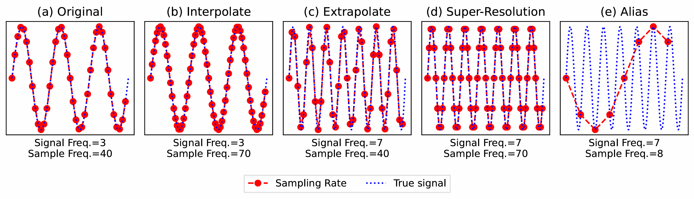
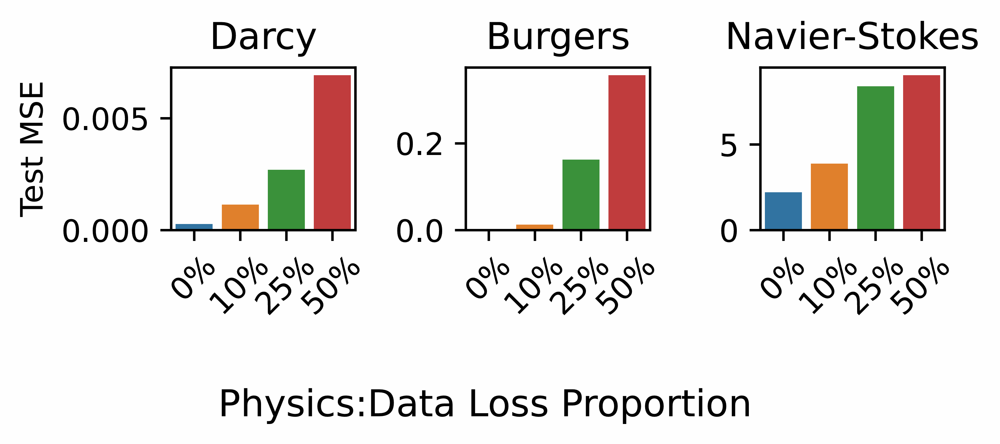
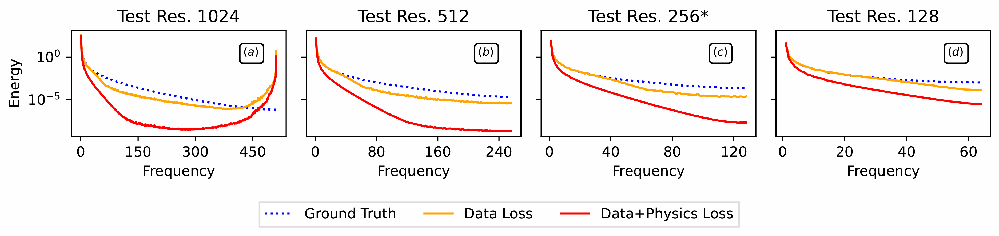
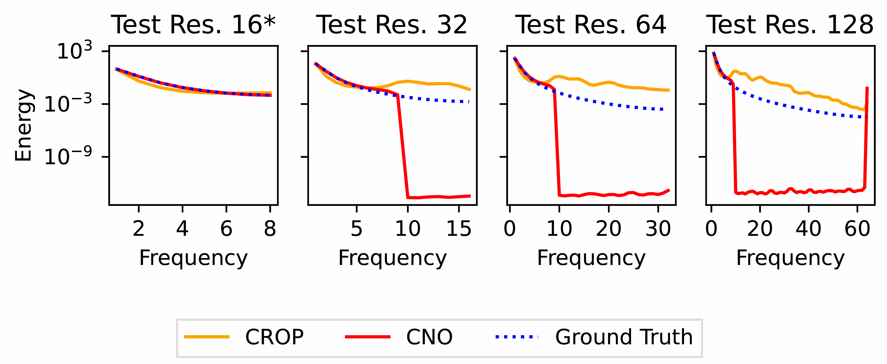
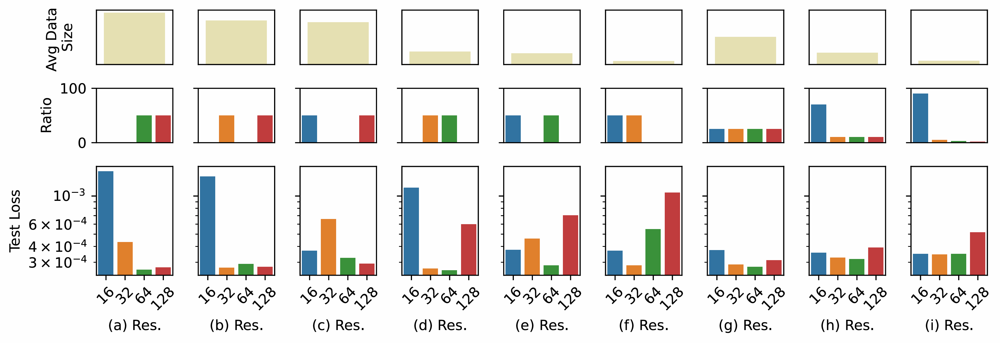

What are Machine Learned Operators?
Modeling physical systems governed by partial differential equations (PDEs) is critical to many computational science workflows.
Central to this problem formulation is that continuous physical systems must be sampled and, therefore, modeled discretely.
For discrete models to be useful in representing phenomena of different scales, scientists require the ability to use it at different resolutions accurately.
For example, when modeling fluid flow, scientists often use adaptive mesh refinement, a technique that increases simulation resolution in areas that require high accuracy (e.g., regions
of turbulence), and coarsens the resolution in less critical regions.
Traditionally, these discrete models are numerical methods which, by design, can be employed at arbitrary discretization.
However, numerical methods are computationally expensive.
Alternatively, machine-learned operators (MLOs), a class of data-driven machine learning (ML) models which parameterize the solution operator to families of PDEs, have been proposed.
Although querying MLOs at arbitrary discretization is computationally inexpensive, it is not obvious that this can be done accurately.
In this work we systematically show that the current manner in which MLOs are trained does not enable them to do accurate multi-resolution inference.
We then propose a data-driven solution, namely, multi-resolution training, which elicits the desired behavior.

Challenge: Discretely Modeling Continuous Systems
The fundamental challenge in discretely representing continuous systems lies in the choice of sampling rate.
The Whittaker–Nyquist–Shannon sampling theorem established that, given a sampling rate r, the largest resolved frequency is r/2.
Thus, ML models will be trained on discrete representations, where only some of the frequencies are fully resolved.
Resolving higher-order frequencies greater than r/2, consequently, becomes an out-of-distribution task.
Aligning these discrete models’ predictions with the underlying continuous system is a non-trivial open problem.
Within an ML context, when inferring at different discretizations of a given signal, aliasing can manifest as the divergence between the energy spectrum of the model prediction and the expected output.
Aliasing indicates a model’s failure to fit the underlying continuous system.
In the figure below we represent the true signal via the dashed blue line and the representation of the true signal that we actually measure via the dotted red line.
Notice that the rate at which I collect measurements of the true signal impacts the type of signal we actually measure.
Original: Signal is sampled at a rate greater than its Nyquist frequency.
Interpolation: Adapting to new sampling rates of a given signal.
Extrapolation: Adapting to new frequency information under constant sampling rate.
Super-Resolution: Sampling a system at a higher rate, which enables the capture of higher frequency information (interpolation and extrapolation).
Aliasing: High-frequency information is misrepresented as a low-frequency information due to insufficient sampling.

Breaking Down Multi-Resolution Inference
We define multi-resolution inference as the ability to do inference at multiple resolutions (e.g., sub-resolution and super-resolution). The zero-shot multi-resolution task employs an ML model, which is trained on data with some resolution, and then tested on data with a different resolution. Zero-shot multi-resolution inference raises two important questions with respect to the generalization abilities of trained models:
- Resolution Interpolation. How do models behave when the frequency information in the data remains fixed, but its sampling rate changes from training to inference? Can the model interpolate the fully-resolved signal to varying resolutions?
- Information Extrapolation. How do models behave when the resolution remains fixed, but the number of fully resolved frequency components changes from training to inference? For super-resolution, this means can the model extrapolate beyond the frequencies in its training data and model higher frequency information?
Zero-shot Multi-Resolution or Aliasing?
...
Physical Optimization Constraints
We study if physics-informed optimization constraints are capable of enabling zero-shot multi-resolution inference.
We optimize each set of model parameters θ with a dual optimization objective L(θ) = (1 − w) ∗ ℓdata(θ) + w ∗ ℓphys(θ), where ℓdata is the original data-driven loss (mean squared error), and where ℓphys is an additional physics-informed loss, which explicitly enforces that the governing PDE is satisfied.
First, we find that the data-driven loss always outperforms any training objective that includes a physics constraint.

To further illustrate this, we use the smallest non-zero w = 0.1, to train a model at resolution 256 (indicated by *) and compare the physics-informed optimization with solely data-driven optimization.
In the following figure, we find that the predicted spectra of data from models optimized with a physics loss generally diverge more substantially across test resolutions than models optimized with only a data loss.
Models optimized with physics constraints even fail to accurately fit their training distributions (subfigure (c)), and they fail to generalize to both super- and sub-resolution data (subfigure (a,b,d)).

We conclude that physics informed constraints do not reliably enable multi-resolution generalization.
Band-limited Learning
We study two approaches which propose learning band-limited representations of data (i.e., convolutional neural operators (CNO), Cross-Resolution Operator-Learning (CROP)) and assess if they are capable of enabling zero-shot multi-resolution inference.
We do an experiment where we train CNO and CROP models on resolution 16 data (indicated by *) and evaluate them at resolutions 16, 32, 64, 128.
We visualize the average test 2D energy spectra of model predictions and ground truth in the figure below.
We notice that the predicted spectra from both CROP and CNO diverge from the ground truth after frequency 8.

We note more broadly that the design of band-limiting a model’s training data and predictive capacity is counter-intuitive to the goal of multi-resolution inference, in which, a broad range of frequencies must be modeled accurately.
Band-limiting a model’s predictive capacity may enable accurate fixed-resolution representations, but it ensures that high-frequency information is not predicted accurately (or at all).
We conclude that band-limited learning limits a model’s utility for multi-resolution inference.
Proposed: Multi-Resolution Training
We hypothesize that the reason models struggle to do zero-shot multi-resolution inference is because data representing a physical system at varying resolutions is sufficiently out-of-distribution to the model’s fixed-resolution training data.
To remedy this, we propose a data-driven solution: multi-resolution training (i.e., training on more than one resolution).
We do an experiment where we train an FNO on multi-resolution data. The results are shown in the figure below. The bottom row shows the test loss across different resolutions.
The middle row shows the ratios of training data within each resolution bucket.
The top row shows the the average number of pixels in a data sample in the training set; lower number of pixels enables faster data generation and model training.

We first study what happens when you include two resolution in the training data: In subfigures (a-f), we observe for pair-wise training, the test performance for data that corresponds to the two training resolutions is generally better, but we also note that there are not consistent gains for the two non-training resolutions.
This indicates that models perform best on the data resolutions on which they are trained.
To improve multi-resolution capabilities, we investigate the impact of including data from all resolutions.
We first assess an equal number of samples across resolutions.
In subfigure (g), the test performance across all resolutions improves, which confirms that multi-resolution training benefits multi-resolution inference.
Next, we ask: Can we improve the computationally efficiency of multi-resolution training?
To do this, the training dataset must be composed of primarily low resolution data, as it is both the cheapest to generate and the cheapest to train over. We compose two additional multi-resolution datasets and observe in subfigures (h, i) that models remain competitive across test resolutions, even as we decrease the amount of high-resolution data.
Conclusion
For MLOs to be as versatile as numerical methods-based approaches for modeling PDEs, they must be able to perform accurate multi-resolution inference. To better understand an MLO’s abilities, we break down the task of multi-resolution inference by assessing a trained model’s ability both to extrapolate to higher/lower frequency information in data and to interpolate across varying data resolutions. We find that models trained on low resolution data and used for inference on high-resolution data can neither extrapolate nor interpolate; and, more generally, they fail to achieve accurate multi-resolution inference. Changing the resolution of data at inference time is akin to out-of-distribution inference: models have not learned how to generalize in such settings. We document that models used in a zero-shot multi-resolution setting are prone to aliasing. We study the utility of two existing solutions–physics-informed constrains and learning band-limited learning–and find that neither enable accurate multi-resolution inference.
Based on these results, we introduce a simple, intuitive, and principled approach to enable accurate multi-resolution inference: multi-resolution training. We show that models perform best at resolutions on which they have been trained; and we demonstrate that one can computationally efficiently achieve the benefits of multi-resolution training via datasets composed with mostly low-resolution data and small amounts of high-resolution data. This enables accurate multi-resolution learning, with the added benefit of low data-generation and model training cost. A promising future direction remains the automated selection of multi-resolution training data using strategies like active learning.
Further details about all experiments and figures discussed in this blog can be found in the main paper. If there are any questions feel free to email the first author for clarification.